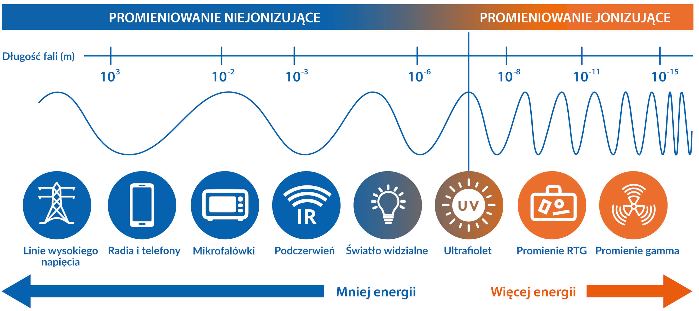
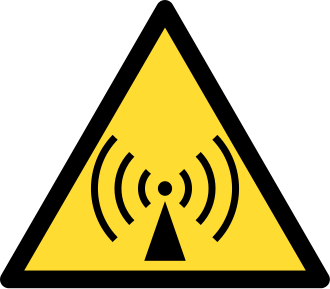

Promieniowanie jonizujące
Promieniowanie jonizujące to wszystkie rodzaje promieniowania, które wywołują jonizację ośrodka materialnego, tj. oderwanie przynajmniej jednego elektronu od atomu lub cząsteczki albo wybicie go ze struktury krystalicznej. Za promieniowanie elektromagnetyczne
jonizujące uznaje się promieniowanie, którego fotony mają energię większą od energii fotonów światła widzialnego. Substancje emitujące promieniowanie jonizujące nazywamy promieniotwórczymi. Absorpcja promieniowania przez materię jest
wykorzystywana w wielu metodach badawczo-pomiarowych, np. radiografii przemysłowej, rentgenografii strukturalnej. W medycynie - radiologii: w celach leczniczych i diagnostycznych (radioterapia, medycyna nuklearna).

Podział na promieniowanie jonizujące i niejonizujące
Promieniowanie niejonizujące
Promieniowanie niejonizujące to rodzaj promieniowania elektromagnetycznego (fali elektromagnetycznej), które nie wywołuje jonizacji (tzn. energia promieniowania jest zbyt mała do emisji elektronu z atomu lub cząsteczki) ośrodka, przez który przechodzi.
Podział ten związany jest także z rodzajami oddziaływań na zdrowie ludzi i zwierząt w obszarze występowania tego rodzaju promieniowania. Źródła promieniowania niejonizującego z uwagi na ich rodzaje dzieli się na naturalne i sztuczne
źródła pól elektromagnetycznych.
Źródła naturalne
- Promieniowanie termiczne ciał na Ziemi
- Promieniowanie słoneczne
- Naturalne zmiany pola magnetycznego np. ziemskiego pola magnetycznego,
- Naturalne zmiany pola elektrycznego np. wyładowania atmosferyczne
- Fale radiowe pochodzenia pozaziemskiego, nie pochłonięte przez atmosferę
Źródła sztuczne
- Elektroenergetyczne linie napowietrzne wysokiego napięcia
- Stacje radiowe i telewizyjne
- Łączność radiowa, w tym CB radio, radiotelefony i telefonia komórkowa
- Stacje radiolokacyjne i radionawigacyjne
- Stacje transformatorowe
- Sprzęt gospodarstwa domowego i powszechnego użytku oraz instalacje elektryczne

Znak ostrzegający przed promieniowaniem niejonizującym, np. radiowym lub mikrofalowym